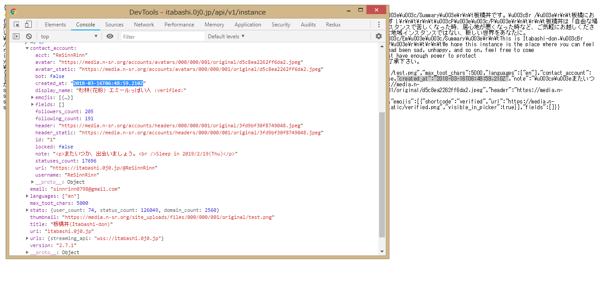
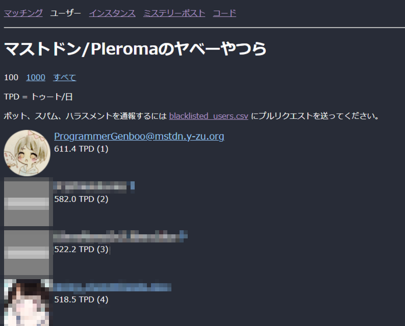

そして今日、おかげさまで 一周年 を迎えることができました。
弊インスタンスの利用者のみなさま、そして近隣インスタンスのみなさまに、心より感謝申し上げます。

一周年ということで、色々な出来事を振り返るには良い機会なので、なるべく端的に振り返ってみます。
そして、今後の在り方に関して少しだけでもいいので、自分なりに考えを纏めていきたいなと考えています。
また、この記事に記されている内容について、著しく 客観性が欠落している ものがあります。
意図的に主観をぶち込んでいるので、そこはご理解ください。
これまでの板橋丼
板橋丼誕生までの経緯
わたしは当初、小規模の個人インスタンス（以後 元鯖 と表記）でトゥー廃（＝トゥート廃人）として生活していました。1日に500トゥートすることも稀なことではなく、ほんっとに暇を謳歌していました。

で、私は前々から元鯖の 独自機能の開発 を担当していました。
従来はテスト環境なしの一発勝負で何とかなったのですが、流石に危険だと考え直して、開発環境が欲しいと思うようになりました。
そんな時、ある一人のユーザーから「 一緒にインスタンスを建ててみないか 」とのお誘いがありました。
そう。彼こそ現在の板橋丼のオーナー、Яë Sinn Rinn 氏です。（以後 りんちゃ と表記）
まず設立するにしろ、どういうインスタンスを建てるのか。
やるからには、ただのテスト用インスタンスじゃつまらない。じゃあどうしよう、と。
この頃のわたしは、完全に ネタだと捉えていた ので、ホントに適当に「じゃあ板橋の地域インスタンスでもする？」と投げ掛けてみました。
するとなんと、彼はあっさり承諾しました。何ということでしょう……。
こうして板橋丼が建ちました。 ほんっとにこの頃は深い信念とか何にもないです。まじで。笑笑
インスタンス方針の策定
念願のMyインスタンスが建ちましたが、この頃のわたしはサーバー周辺やSSH関連に触れたことなど、全くありませんでした。なお、今でも不十分すぎる知識で管理しているので、割と頻繁にしくじりますw(全く笑えない)
SSHの接続方法からアップデートまで、何にも分からなかったわたしはここから、ソース改変の方に集中することになります。
しかし、そこから一ヶ月も経たない頃だったと記憶しています。
個人的にではあるものの、元鯖時代から仲良くさせていただいている、他インスタンスのユーザーさんの悩みを聞いていました。
その中でも「人目を気にせずトゥートしたい」という悩みに関して、独自機能を用いれば解決できるのではないかと思い立ちました。
こうして 限定公開トゥート が誕生しました。
これが後に板橋丼史上初、且つ最大規模の独自機能となります。
その頃の板橋丼は圧倒的に小規模で、『こちらに移住してくるだろう』という考えなど、まず頭の片隅にすらありませんでした。
そこで、私は最初に元鯖の管理人さんに直談判しました。
ですが「他インスタンスにはトゥートが配信されないこと」を問題視し、残念ながら採用には至りませんでした。
そこでわたしは板橋丼への実装を試み、正式に実装されることとなりました。
それと同時に、元鯖から本格的に移住することに決めました。
そしてこの時の経験を通して、「 単なる地域インスタンスではない、あなたの居場所になりますように 」というポリシーを掲げました。
機能面での強化
わたしが本格的に移住した後は、独自機能の開発に力を入れました。引用ブースト の実装、 セカンダリトゥート のキーバインディング、 ハッシュタグ投稿の拡張 、などなど……。
先述の機能は全て、板橋丼の住人もしくは周辺鯖のフォロワーさんの要望を拝借して、形にしたものです。
もちろん残念ながら、わたしの技術不足で実装できなかったものもあります。（Rubyに関しては全くの無知💦）
ですがそれでも、気軽に話せて、誰かに寄り添える 鯖缶を目指してきました。
きっと別のカタチで支えられたのなら、きっとそれでもいいんじゃないか、と考えます。
外部への宣伝活動
先に挙げた通り、板橋丼は機能面での充実を図ってきました。しかし、残念ながらそれらの行いも利用者が居なければ、全て水の泡となってしまう。
そこでわたしは、徹底的に 隙有れば自分語り しまくりました。
例えばGoogle+で移住先に困っているフォロワーさんに売り込んでみたり、定期的にスクショを投げて間接的に宣伝したり。
Google+ Theme for Mastodonなんかも、ある種の宣伝的活動でしょう。
また、昨年はMastodon関連のイベント「 Petit Mastodon Constructive Meetup 」に、 唯一の未成年者 として足を運びました。多分。((
わたしが未成年者だからなのか、真意は分かりませんが、次回のイベントでの登壇のお話を持ちかけてくださるなど、それなりの影響力はあったと考えられます。
ちなみにですが、残念ながら次回のイベントと文化祭が見事にブッキングし、登壇は叶いませんでした。
正直に言えばどっちも出たかった。笑笑
そして、気付けばユーザー数は 50人 を突破し、総トゥート数は 125,000トゥート を突破しました。
鯖缶2人でちまちまやっていた最初の頃を思い浮かべると、今の発展具合が素直に信じられません。
管理者の増員
まぁそんなこんなで暫くやってきましたが、半年と少し経った頃から、両鯖缶が多忙を極める事態となりました。そして同タイミングで発生した板橋丼のトラブルにおいて、外部からの支援が必要不可欠である、という事が浮き彫りになりました。
そこで、普段から保全を手伝っていただいた方3名に、正式に板橋丼の管理をお願いすることになりました。
これからの板橋丼
ここまで、端的にこの一年間を振り返ってきました。((何か抜けてたら教えてください笑では次に、板橋丼の現状と問題点を挙げていきます。
ただ纏めるだけじゃ、ホントになんの生産性もないので。笑
1. 鯖缶が未成年者である
一番当たり障りの無いことから触れさせていただくと、わたしたち板橋丼の鯖缶は 両者とも未成年者 だということです。そのため、どうしても 運営費がかなり厳しくなる という事態が、稀にではなく割と頻繁に起こります。
そして来年度から、遂にわたしは受験生になってしまいます。
きっとこれまでと比べて、より一層苦しい状況に陥ります。
他インスタンスの管理者さんにも言えることですが、殆どのMastodonインスタンスはあくまで 仕事ではなく、ましてや慈善活動でもなく、ただの趣味の一つ として開かれています。
なので、やむを得ない場合には インスタンスの停止 も十分にあり得ます。
わたしたちには、そのような事態を防ぐための努力義務が課せられています。
だけどそれでも、仮にその時を迎えなければならないときには、どうか叱責しないでください。
きっと私も傷付きますが、それ以上に傷付く人たちが出てきます。
2. わたしの技術力不足
先述の経緯でも触れましたが、わたしは管理者という立場にも関わらず、最低限の保全すら出来ていない という現状があります。わたしは、素直にこれを自分の課題であると受け止めています。
この一年間、わたしはりんちゃに頼りっきりで何もしようとしなかった時期がありました。
今でもなお、その甘えは完全には払拭できていません。
なのでこの新しい一年は、受験生という立場に甘えずに、自分にとって出来ること を出来る限りやっていこうと思います。
そうやって触れていくうちに、どんどん経験が積み重なり、自然と技術力も上がっていくはずです。
3. 地域インスタンス面での喪失
わたしは板橋丼が 地域インスタンスとしての本来の役割 を果たせていない、ということが一番の問題であると認識しています。最初の頃は、板橋在住のユーザーさんがそれなりにいらっしゃいました。
ですが今となっては、遂にわたし一人だけとなりました。
これはわたしの 過度な宣伝活動 に起因すると考えています。
とにかくユーザー数を増やすために、自分の親しいフォロワーさんを誘うようになりました。
その結果、気付かないうちに 身内インスタンス のようなものに変貌してしまっておりました。
素直に、非常に悔いている部分があります。
居場所造りを優先しすぎて、当初の地域性を全て排除してしまうように仕向けてしまった。
これでは、本当に板橋を愛しているユーザーさんにとっては、最悪極まりないものじゃないかと。
そこで、これからは板橋の地域インスタンスとして、全力で地域性を再興させていきたいと思います。
……という提案をこれからします。りんちゃ達よろしく。笑
まだわたしの中の仮称ですが「 板橋ルネサンスプロジェクト 」です。くっっっっっっっそダサいな((自分で言うな
恐らく勉強の合間を縫って、板橋区及び周辺地域に関連性をもたせた独自機能を開発していくことになると思います。
めちゃくちゃ反対されるような気もしますが、色々策定段階に入った時点でお知らせできれば、と考えています。
最後に
最後に、ここまで板橋丼を続けてこられたことに、いま一度 心より感謝申し上げます。そしてこれからも支えてくださる多くの方々、これからもよろしくお願いいたします。
この記事は 「わたし」という一個人として 書かれたものなので、決して 「板橋丼の運営全体」として の見解ではありません。
だいぶ勝手な解釈やビジョンを打ち立てていますが、まぁあまり気にしないでください。笑
わたし以外はこの記事を読むまで、誰一人としてこの内容を知りません。
なので、これから色々と話し合いせねばいけない、といった感じです。
ここで挙げたことが真実なのかどうか、他人から見た視点がどのような景色なのか、わたしは知る由もありません。
だけどそれでも、これからの一年間、強い信念をもって支え続けたいと思います。
わたしは「わたし」として、これからも走り続けます。
ここまで超長文を読んでくださった方々、本当にありがとうございます。
これからもどうか、わたし達を見守っててください。
どうかご期待に沿えるよう、全力で頑張ります。
発行日時：2019/03/16（平成31年3月16日）
文責： どっかのげんちゃん。